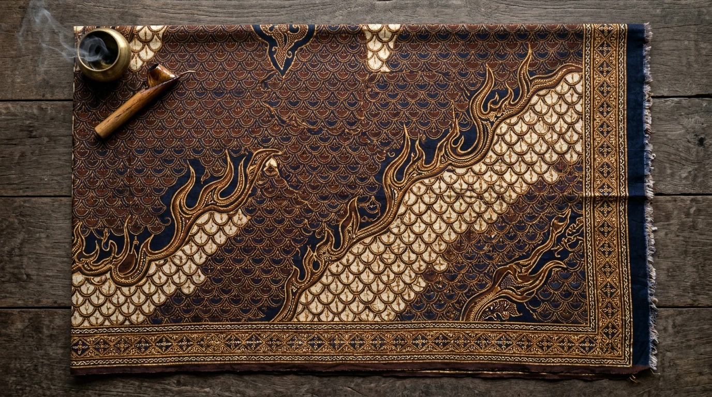

Daftar Isi Artikel
Kediri Event — Kediri Fashion Batik Festival (KFBF) adalah agenda tahunan yang diinisiasi Dekranasda dan Dinas Perdagangan dan Perindustrian Kabupaten Kediri untuk mengangkat wastra lokal, dengan motif khas seperti gringsing, lidah api, Padma Anindya, dan Panji yang menjadi identitas batik Kediri.
Ringkasan Inti Kediri Fashion Batik Festival:
- Panggung Tahunan Wastra: KFBF digelar di kawasan Simpang Lima Gumul sejak 2023, dan edisi 2025 tercatat sebagai tahun ketiganya.
- Tema Eksplorasi Filosofis: Setiap edisi mengusung tema berbeda, mulai dari Padma Anindya Kadhiri hingga Trinayana Kadhiri.
- Kekayaan Hak Paten: Motif gringsing dan lidah api telah resmi dipatenkan Pemkab Kediri, sementara motif Panji diredesain dan diluncurkan ulang untuk kalangan muda.
- Pemberdayaan Terpadu UMKM: Festival memadukan pameran wastra, peragaan busana profesional (*runway*), bazar kriya, dan workshop bagi pelaku IKM.
- Agenda Kalender Wisata 2026: Kalender wisata Pemkab Kediri 2026 mencantumkan Festival Batik Fashion pada bulan Oktober.
Apa Itu Kediri Fashion Batik Festival
Kediri Fashion Batik Festival (KFBF) adalah seni pertunjukan wastra yang dirancang sebagai wadah promosi batik, tenun, dan kriya lokal Kabupaten Kediri melalui peragaan busana spektakuler, pameran seni tekstil, dan bazar kriya UMKM.
Festival ini digagas oleh Dewan Kerajinan Nasional Daerah (Dekranasda) Kabupaten Kediri bersama Dinas Perdagangan dan Perindustrian setempat dengan semangat membangkitkan ekosistem Industri Kecil Menengah (IKM) dan Usaha Kecil Menengah (UKM). Konsep utamanya memadukan batik tradisional bermotif khas Kediri dengan sentuhan siluet busana kontemporer yang modis dan siap pakai sehari-hari (*ready to wear*).
Perjalanan KFBF dari Tahun ke Tahun
KFBF diselenggarakan secara berkesinambungan sejak 2023 dengan tema filosofis yang berganti tiap tahun, mencerminkan metamorfosis wastra Kediri dari pelestarian klasik menuju busana modern:
| Edisi | Lokasi & Waktu | Tema Utama | Sorotan Khusus Acara |
|---|---|---|---|
| KFBF 2023 | Kawasan SLG (2023) | Padma Anindya Kadhiri | Peluncuran perdana festival busana wastra berskala besar dan pengenalan motif bunga teratai Padma. |
| KFBF 2024 | Taman Hijau SLG (14 Sep 2024) | Generasi Z Ready to Wear | Konsep busana kasual anak muda sekaligus peluncuran ulang desain modern motif batik Panji Kediri. |
| KFBF 2025 | Convention Hall SLG (11 Nov 2025) | Trinayana Kadhiri | Konsep batik sarimbit keluarga harmonis, menampilkan 20 perancang busana dengan 44 mahakarya busana batik. |
| KFBF 2026 | Kawasan Simpang Lima Gumul (Oktober 2026) | Festival Batik Fashion 2026 | Tercantum dalam kalender wisata Pemkab Kediri; tanggal dan rilis tema resmi akan diperbarui panitia. |
Motif Batik Khas Kediri dan Maknanya
Gringsing, lidah api, Padma Anindya, dan Panji adalah empat motif batik utama yang menjadi identitas visual kebanggaan Kabupaten Kediri, dengan dua di antaranya telah berstatus kekayaan intelektual paten:
- Motif Gringsing: Motif kuno berbentuk sisik ikan bertumpuk yang bermakna keseimbangan, penolak bala, dan kesuburan. Motif ini merupakan warisan luhur yang telah dipatenkan oleh Pemerintah Kabupaten Kediri.
- Motif Lidah Api: Menggambarkan lidah nyala kobaran api yang melambangkan semangat membara, keberanian, dan dinamika perjuangan masyarakat Kediri. Motif ini juga telah resmi dipatenkan.
- Motif Padma Anindya: Terinspirasi dari bunga teratai suci yang mekar sempurna pada masa kejayaan Kerajaan Kadiri, melambangkan keanggunan, kemurnian budi pekerti, dan spiritualitas agung.
- Motif Panji: Diredesain secara kreatif pada KFBF 2024 dari epos folklor Cerita Panji (warisan Memory of the World UNESCO), menjadi ikon batik Kediri kontemporer yang sangat digemari wisatawan.
- Motif Kontemporer & Alam: Mengangkat potensi agribisnis dan landmark lokal seperti motif Batik Gumul, nanas khas lereng Kelud, dan mangga podang yang manis segar.

Detail keindahan guratan canting batik tulis khas Kediri: perpaduan motif sisik Gringsing dan lekukan Lidah Api yang telah dipatenkan.
Cara Membedakan Batik Kediri Asli
Bagi pembeli pemula maupun pencinta wastra nusantara, mengenali keaslian produk batik sangat penting agar terhindar dari kain printing tekstil tiruan. Berikut empat panduan praktis memilih batik Kediri asli:
- Periksa Karakter Motif Khas: Motif khas seperti gringsing, lidah api, Padma, dan Panji memiliki tarikan pola tegas yang khas dan tidak ditemukan pada corak batik pesisiran biasa.
- Bedakan Proses Pembuatan: Batik tulis dibuat menggunakan canting tembus hingga bagian belakang kain dengan aroma malam alami, batik cap memiliki pengulangan canting cap yang simetris, sedangkan kain sablon *printing* warnanya pucat di sisi belakang.
- Bertanya Langsung kepada Pengrajin: Berdialog dengan perajin binaan Dekranasda membantu Anda menggali filosofi di balik selembar kain serta proses pewarnaan alami yang digunakan.
- Beli di Gerai Resmi atau Bazar Dekranasda: Belanja langsung pada stan pameran resmi KFBF, gerai Dekranasda, atau sentra pengrajin batik Kediri terverifikasi menjamin orisinalitas mutu bahan.
Mengapa Hari Batik Nasional dan Festival Seperti KFBF Penting
Sejak batik diakui secara resmi oleh UNESCO sebagai Masterpieces of the Oral and Intangible Heritage of Humanity pada 2 Oktober 2009, perlindungan warisan budaya ini memerlukan regenerasi tiada henti.
Festival seperti KFBF menjadi jembatan strategis agar generasi muda tidak lagi memandang batik sebagai busana kuno yang formal, melainkan bagian dari gaya hidup modern (*fashion statement*). Dukungan masyarakat dengan mengenakan batik lokal turut menggerakkan roda ekonomi ratusan perajin dan penjahit di pelosok desa Kabupaten Kediri.
Pertanyaan yang Sering Diajukan (FAQ)

Ditulis oleh: Erlang Sinatrya Putra Yusya
Event Content Specialist & EditorSpesialis kurasi konten dan liputan agenda hiburan, seni budaya, dan industri kreatif di Kediri Event. Berkomitmen menghadirkan informasi jadwal terverifikasi dan panduan event terbaik bagi masyarakat Kediri Raya.
Profil Kediri Event